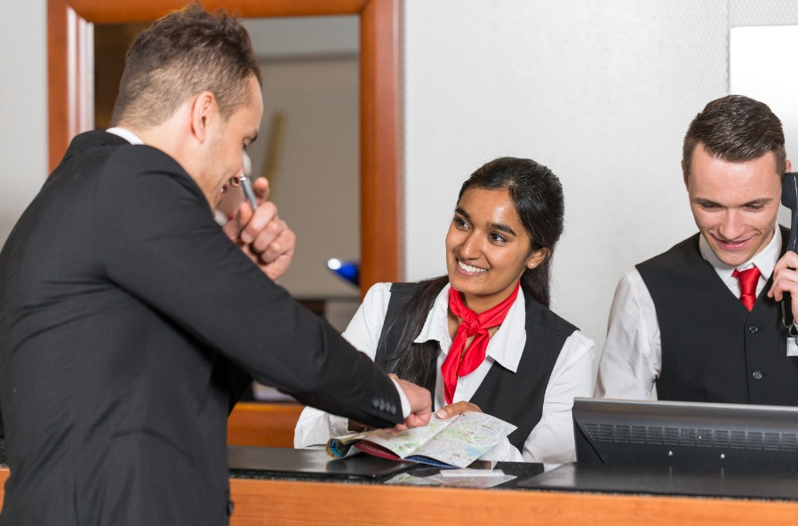

Ik heb in de periode 2024-2025 de opleiding Travel and Hospitality gevolgd. Dat houdt in dat je in verschillende recreatie branches kan werken zoals een travel agent, baliemedewerker of leidinggevende van een hotel. Ik heb deze opleiding gekozen omdat ik dacht dat het me leuk leek om met mensen samen te werken en verschillende culutren te leren kennen. Ook koos ik ervoor omdat ik altijd al geïntreseerd was in recreaties en vakanties. Maar de opleiding bleek toch niet bij mij te passen. Ik vond het saai omdat het vooral veel herhaling was en het veel minder leuk was dan ik dacht. Ik heb er wel veel van geleerd zoals klantgericht werken en samenwerken met collega's. Maar ik heb besloten om toch verder te gaan met mijn studie in software development omdat ik dat veel leuker vind.
